Learning Outcomes
In this this Lab we progress into more advanced Components
- We look at integrating Thumbnails with text attached
- We look at using Pop-Overs (Video in Context)
- Using bootstrap in Moodle Blocks
- Finally we look at some Moodle Housekeeping
Pop-overs
If you use video, you can use a pop-over that will allow you to display a video but also give the video a text description along with a heading, but we can do this in context i.e. without leaving that page we are on in Moodle.
Tell me more
This is what the pop-over looks like on the Moodle labs page, notice we don't have to leave the page or the location
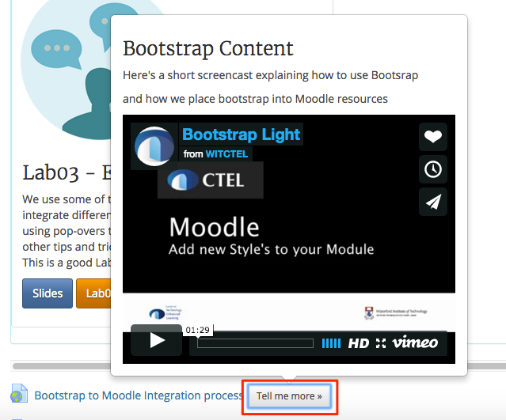
Create your own pop-over
Navigate to this link here and copy the URL
Back in your training module add a URL resource, give it a name then paste in the URL you just copied into the "Eternal URL" field
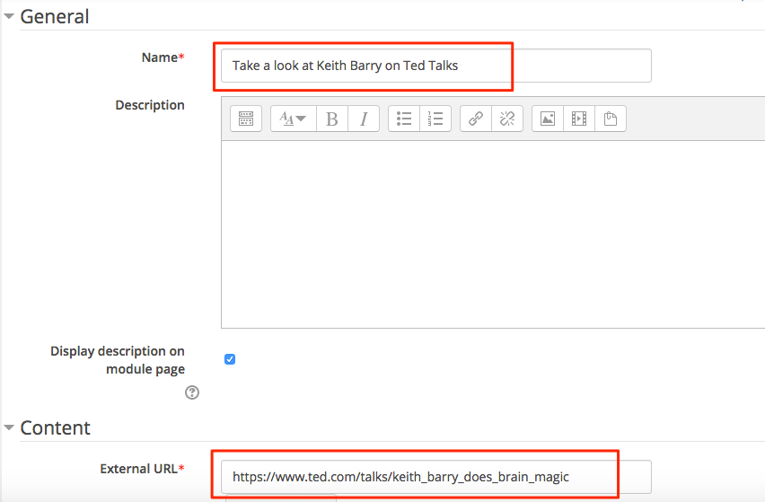
The code
Copy the code below, this will allow you to include any video, just replace the link after the iFrame code from your video that you want to copy. Leave width="420" and height="315" as the dimensions.
<div class="inplace-help">
<h3>Keith Barry</h3>
<p>Watch Keith Barry explain how the mind works</p>
<p>and how the mind is easily manipulated</p>
<iframe src="https://embed-ssl.ted.com/talks/keith_barry_does_brain_magic.html" width="420" height="315" frameborder="0" scrolling="no" webkitallowfullscreen="" mozallowfullscreen="" allowfullscreen=""></iframe>
</div>Don't for get to tick the "Display description on module page" tick box

Now back in your Training Area you should see your pop-over when you click on the "Tell me more" button
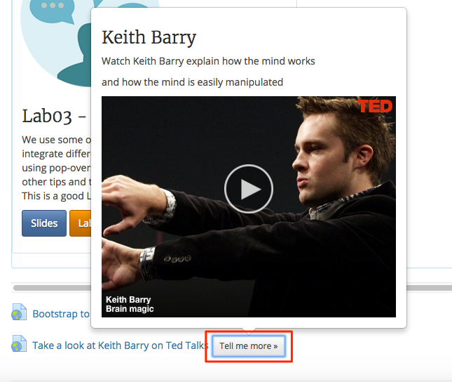
Continue to Step 02
Thumbnails
Bootstrap thumbnails provide us with the capabilities to incorporate images into Moodle, we can use the custom content example, this allows us to combine text with the thumbnail.
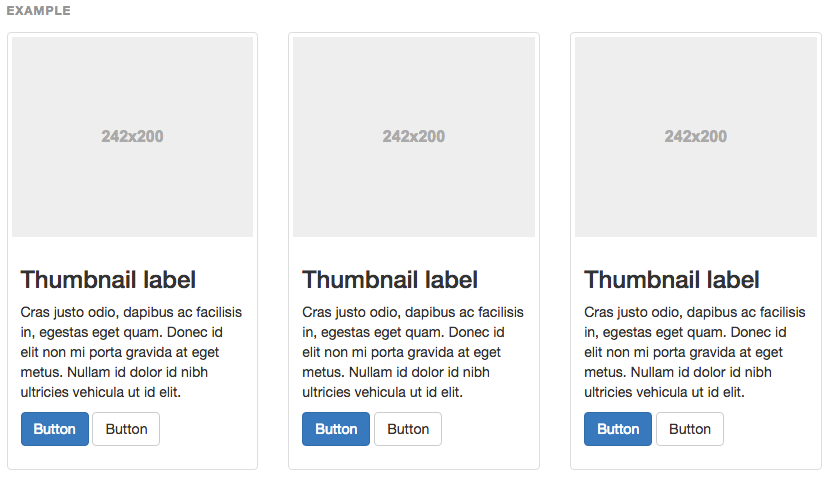
This is what its looks like in Moodle
Remember back in the Moodle Labs module in Moodle we saw Thumbnails in action
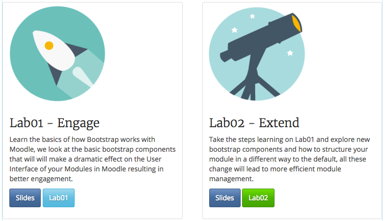
Create your own
- In your Bootstrap tab on your browser navigate to Thumbnails
- Choose the custom content example and click the "copy" button
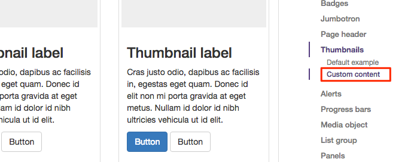
then click copy
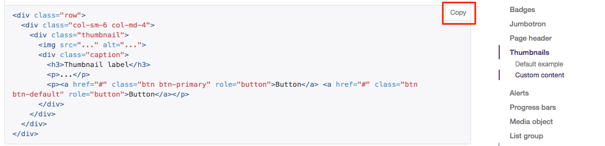
- back in your training area rename section 3 to "Thumbnails"
- paste in the code you have just copied from Bootstrap into the section "Thumbnails" header summary.
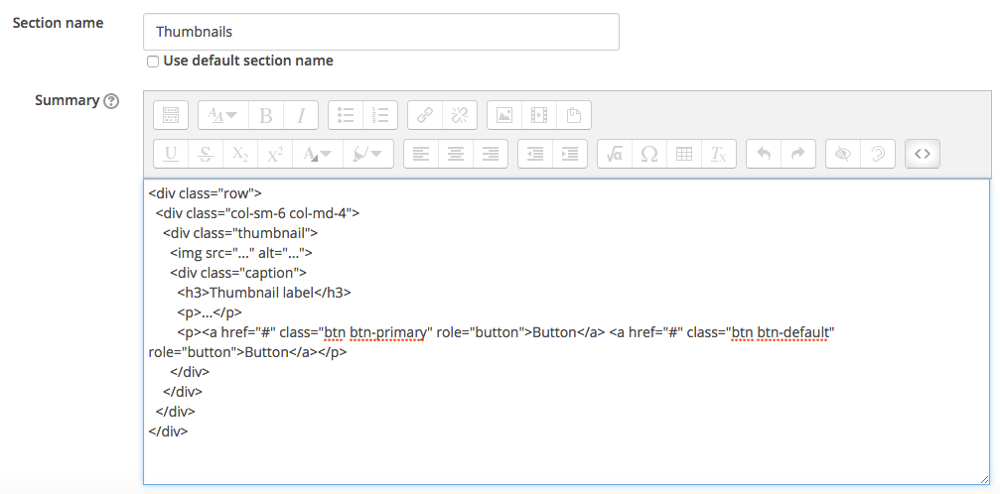
Nesting code
As you can see the code you just copied into the "Thumbnails" section is just for one component sometime we require more than one component, just like the buttons before in the Announcements.
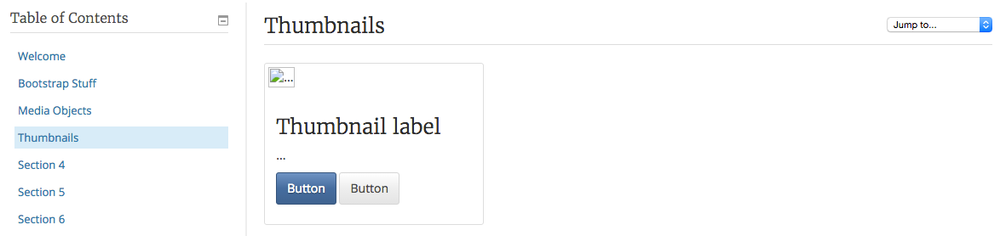
If we want to create another 2 thumbnails we must paste in the code for the 2 new thumbnails, however we want to keep the thumbnails on the same level (Horizontal)
Like this.
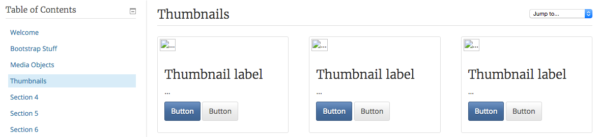
We need to copy just the code thats inside the main Opening and closing
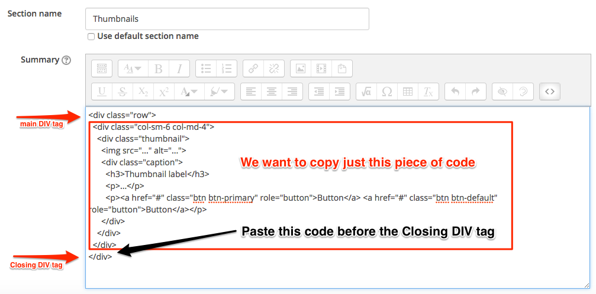
Now your are ready to populate the thumbnails with content (text) and images, we look at this in step 03.
Continue to Step 03
Populate the Thumbnails
We will populate the thumbnails we created from step 02, we need to place our text and images into each thumbnail.
Things to do in Waterford
"Things to do in Waterford" is our topic that we use to populate the 3 thumbnails, decide on 3 things to do in Waterford, find an Image for each one and find a little text for each one.
Reginald's Tower
I will show you one that I will demonstrate, you can do the rest, My heading will be Reginald's Tower and I will put in some text about Reginald's Tower

Find your Images
We need to open a new tab in our browser so we search images, click here to open a new tab for Google Images
Search for "things to do in Waterford Ireland" and we then need to filter for copyright
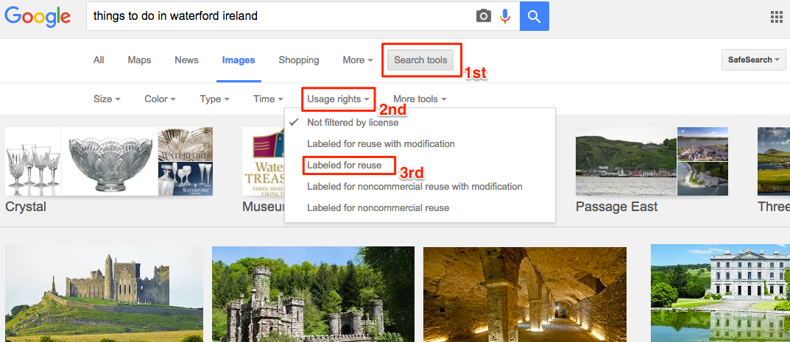
Download your images
Decide on 3 images and download them (they will automatically download to you downloads folder).
Insert your Headings
Delete the heading that is there by default (Thumbnail label) and replace it with your headings.
Insert your Text
Insert your text about the topic that is there by default (...) and replace it with your text.
Insert your Image
Insert your images now, remember if you downloaded an image from Google images it's stored in your downloads folder.
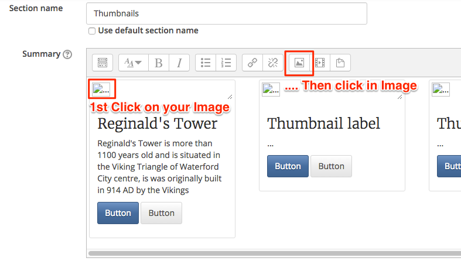
- when you click in the image icon you will see a window asking you to "Browse Repositories"
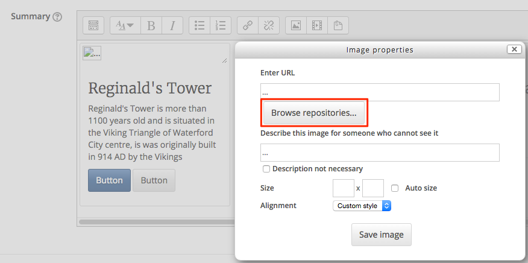
Then choose you file from your downloads folder and finally upload the image
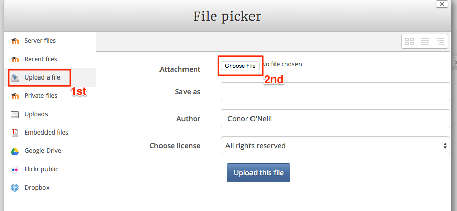
You will have to repeat these steps for the rest of the thumbnails.
Continue to Step 04
Finish the Thumbnails
As you can see from the last step we have the image in place along with the text, now we must finish by placing hyperlinks behind the buttons.

Hyperlinks
Hyperlink from Moodle can either be Internal i.e. to a resource such as a page or an activity such as an Assignment for a forum.
The general rule is that if your hyperlinking to an external resource we must open the resource in a new tab, however if we are linking to an internal resource we can open the resource in the same tab.
- to open a new tab we must use the
target="blank"attribute (place it just before therole="button")
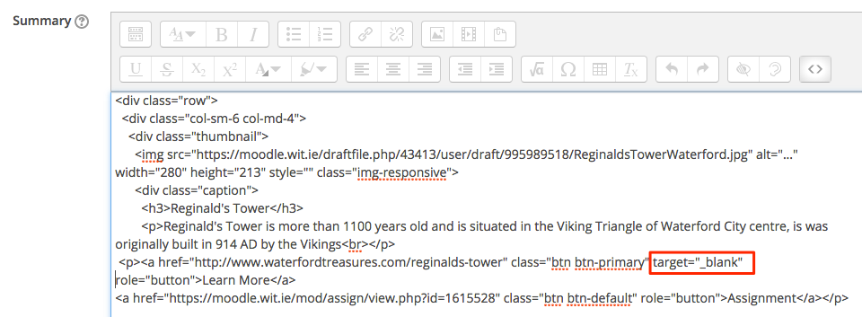
Button Links
I'm going to link to an external website that explains more about Reginald's Tower, but I am also going to link to an internal resource (a Discussion Forum).
back in you training module turn editing on again and click into the code in the section (Thumbnails) header.
you need to insert the URL for both your External and Internal Resources i.e. navigate to the resource and copy the URL's.
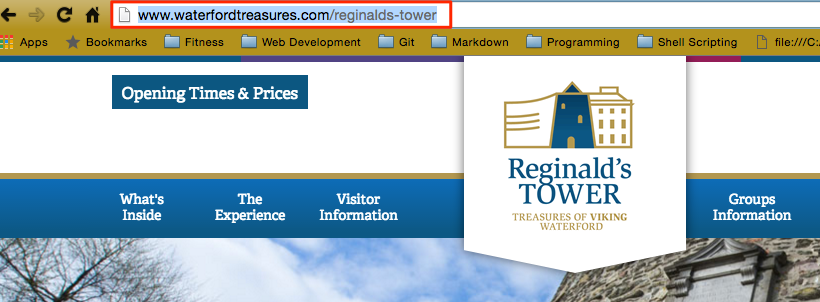
- paste the URL's into the code within the Button i.e. replace the "#" with the URL
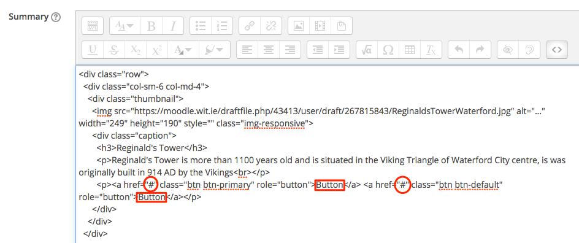
- don't forget the change the names i.e. the text that will appear on the button.
Now the Thumbnail is finished, it has an image that describes what the content is about, some text to introduce the topic and links for more activities
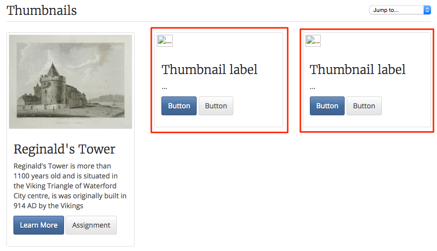
Continue to Step 05
Housekeeping
We have place in some bootstrap components in order to make the module more engaging and to make it easier to navigate and provide a better user experience.
We need to tidy up our Training Area so we can improve on the work we have done with Bootstrap.
Delete Blocks
Blocks are located down the left hand side of the Moodle page in your module, delete all but the essential blocks.
- turn editing on and locate the block you want to delete.

- next hide all the sections that done have a section title, this way the students wont see them.
Module Image
- with Editing turned on goto "Edit Settings" under Administration (on the left)
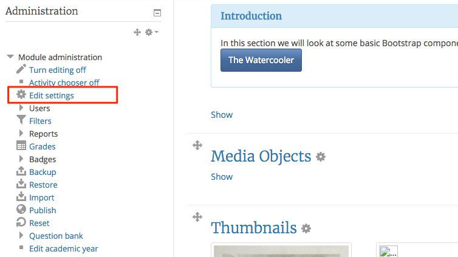
- drag and drop an image you downloaded from Google to the "Module summary files"
- next scroll down to "Course Format" and change "Hidden sections" to **Hidden Sections are Completely invisible.
- save changes.
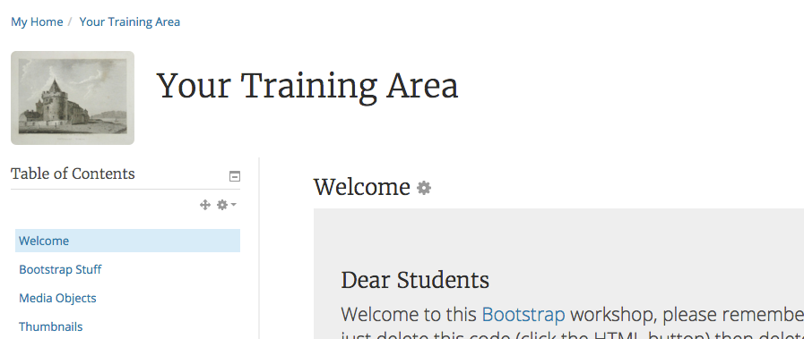
Continue to Exercises
Exercises
Exercise 1
Add an HTML block the edit your new block (it will be located on the left-hand side of you Moodle page, it will be called (new HTML block).
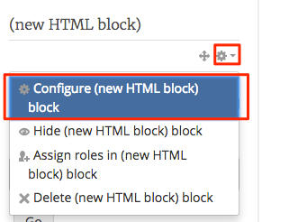
- place the following text into the block and place a hyper link behind each entry, you can use "Quick Links" as the title.
Lecturer
WIT Libraries
Moodle Support- one at a time get the URL for each entry.
- now you just need to highlight each entry and click on the link Icon in the screen.

Exercise 1
Please post you comments or ideas RE bootstrap / Moodle in order for the CTEL to learn new way in which we can support members of staff.
Please post here